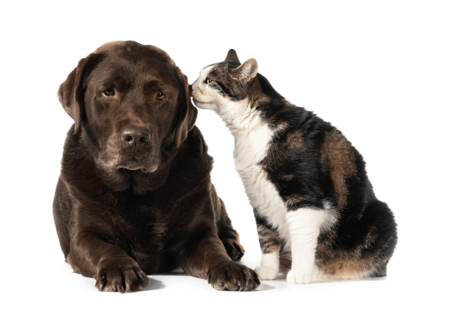

Soy la persona detrás de Peluditos al Cuidado. Ofrezco paseos, visitas a domicilio y acompañamiento veterinario con un enfoque cercano y personalizado.

Desde siempre he sentido una conexión especial con los animales. Mi forma de trabajar se basa en el respeto, la paciencia y la comprensión de la personalidad única de cada mascota.
Trabajo únicamente yo como cuidadora, lo que garantiza estabilidad y confianza. No delego en otras personas ni utilizo cuidadores externos.
Me adapto a las rutinas de cada perro o gato: horarios de comida, tiempos de paseo, medicación si fuera necesaria y nivel de energía.
Durante cada servicio envío fotos y actualizaciones para que tengas tranquilidad total mientras estás fuera.
Ofrezco servicios de cuidado de mascotas en Madrid y zonas cercanas. Si tienes dudas sobre disponibilidad en tu barrio, puedes escribirme directamente.
Contactar